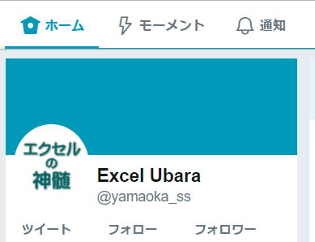

エクセル関連ツイートNo5

「セルに特定の文字が含まれているかどうかの判定」
A列に、
Excelという文字を含む行を別シートに転記するとしたらどうするか。
やり方がいっぱいありすぎる気も、、、
大文字小文字を区別するかどうかで変わってきますね。
F4
これが一番使われているように思う。
Alt + Enter
たまに使っている人もいるらしい。
Ctrl + Y
これを使っているのは聞いたことがない。
私には逆に何とも古めかしい言葉のように感じられてしまって。
モボ・モガの大正モダン・昭和モダン、そしてモダン焼き…
もしかして、時代の変革期になんとなく使われだしたりするのかなーとか考えてみたり。
SELECT SUM(列) FROM テーブル WHERE 検索列 = 条件 GROUP BY 検索列
PC,iPhone,Android,WiiU,Swith,PS4
使ってよいよと言ってほっとけば、勝手にゲームを始めている。
これらの違いを説明するのは難しい、というか説明する必要があるのかさえ考えざるおえない。
無駄な時間なのか、教訓なのか、、、
なんにしても、スコープは大事。
「このフォルダの中のこのフォルダ…」
その後なんとなくの会話の中で、
「さんざん説明した後に、ところでフォルダって何?とか聞かれるとガクッとくるよね」
と言ったら、
「うん、フォルダって何か良く分からない」と返された…
せめて、もうちょっと早めに言ってほしかったとは思うよね。
相手の技量を把握しきれていなかった自分が悪いのではあるのだけど。
行非表示：Ctrl+9
行再表示：Ctrl+Shif+9
列非表示：Ctrl+0
列再表示：Ctrl+Shif+0←これ使えない
可視セルのみ選択：Alt+;
フィルターしてない時ですよ。
・需要がない
・知られていない
前者の場合はそれまでの話だが、
後者の場合は、
知っている人と、知らない人で、
共通のキーワードがないって事なんだと。
知っている人にとってのキーワードでは意味がないという事なんだ。
いや、でも、知らないんだから、検索しないよね、、、
チェーンストアのための必須単語1001
なんとなく愛着あるし未だに捨てずに持っている。
初版は昭和43年とのこと。
当初は必須単語701で1001が出たときに、それならと自分用に買ったものだ。
・必ず復習して自分のものにする
・後に説明になかった部分を自分で調べる
がよろしかろうと思ってはいるものの、簡単に直せないのが人の性、で良いのか。
うーん、サブクエリ…でもまあ、機能の説明としては、、、
主キーという表現がどうかなとは思うのですが、私としてはVLOOKUPの検索値ってそういう感覚で使ってますね。
効率がかなり変わってくるはずです。
知ってるのと使えるのと使ってるのは違うので普段はそんなに。
でもCOUNTIFは良く使いますかね。
SIGN関数とか知ってはいるけど、かつて使ったことあったかなー。
それと、主要関数は細部もある程度理解しておいた方が良いでしょう。
VLOOKUPの数値・文字とか、近似一致とか。
それは当たり前なんです。
だからといって適当に使えれば良いという事でもないです。
ソロバンも電卓も道具です、でも速い人と遅い人では雲泥の差がある。
どこまで使えるようになれば良いかは人それぞれではあります。
プログラミング覚えるのに、というか、PC使うのに、
2進数を覚えなくてはいけないのか…
知らなくてもほとんど困ることない気がするので、そこを飛ばして勉強するのもありではないかと。
いつまでも2進数がどうのといってる時代ではないでしょ。
こんなの教えたの初めて、必要な人もいるんですね。
あっ、私としては、睦月、如月、弥生の方が好きです、嘘です。
ただし、上手くググれればという事になりますかね。
デフォルトと聞くと初期値、既定値のことだよなと思う。
たぶん、その言葉を知ったのがそれだったという事なんでしょうね。
いずれにしても、カタカナ語は難しい。
何の思惑もない個人的な意見は少し違います。
2進数なんかはまずは中学くらいで教えれば良い。
関数は一覧見て使えそうなものを片っ端からやってみればよい。
その後どう使うかを考えることが重要なんだと。
でも、そんなこと言ったらそれこそ老害…
エクセルでそこまでやる理由ある、他を使えば簡単にできるのでは、そこまでこだわる理由ある?
よくよく理由を聞くと大抵は面白そうだからやってみたい、という場合も多くて、それなら仕方ないなーと。
従って「人財」と書いているのは人をお金に例えているものだと。
つまりお金で買えるよと言いたいのかと思ってましたが、、、違ったのかな。
Twitter+Excelとか
Twitter+Programming
もしかして、いっぱいいるのではないかという予感
行列で混乱しやすいのは縦書き文化が関係しているのではないか。
列と言えば、整列、○列縦隊が思い浮かばれるので、前(目標)に対して縦というのは普通に感じられる。
しかし、行と言ったとき縦書きの場合は縦になってしまう。
すると、行とだけ言われた時にどっちだとなってしまう。
簿記の「貸借」も「借り」「貸し」のひらがなの向きみたいなのがあるけど、
そもそも貸借と言ったときと順番が違うから覚えづらいのではないかと思っているのですけど。
「借貸」と言ったら別の意味だし。
やはり昔に戻して、
・中学校で2進数
・高校で行列
これで良いんじゃないかと思えてきた。
小学校でプログラミングの入り口やろうっていうくらいなのだから、問題ないよね。
どうにもサンプルが思いつかない。
cryで「ワン」「ニャン」はさすがに…
というか、「ワン」と鳴くネコもいれば、「ニャン」と鳴く犬もいるよね、あれっ、いなかったっけ…
名前が適当なのかな、
コンビニのオーナー?が消費期限の定義を知らないとかって事あるのか…
一般の人なら仕方ないのですけどね、いろいろあるし。
消費期限、賞味期限、賞味期限（年月）、賞味期限なし
もしかして、Twitterの文字数制限の方が使う機会が多いかもとか。
あっ、VBAはちょっと違いますよ。
・ユーザー定義リストで並べ替えしたい
・途中に半角空白を入れたい
つまり、
C
A
←半角スペース
D
B
このような順でソート、これをユーザー定義リストでやりたいのです。
わがままな人大好きなんで何とかします。
再建の費用は問題ないでしょうが何十年もかかるという。
つまり今後AIにどんな仕事が奪われていくとしても、この再建にかかわる仕事は今後何十年も続くという事か。
AIにノートルダム寺院は建てられないですからね。CD.2
有機化学は勇気をもって、無機化学は向きになって、、、知らんけど。
どのように収集されたデータか確認するようにしています。
平均値・中央値をみる前に、
外れ値・異常値をみるようにしています。
嫌われることは多々あります。
Windowsのエクセルは平成のまま、、、
きっとわざとだ、そうだ、わざとやってるんだ。
基本情報技術者試験
応用情報技術者試験
プロジェクトマネージャ試験
データベーススペシャリスト試験
エンベデッドシステムスペシャリスト試験
システム監査技術者試験
情報処理安全確保支援士試験
ドレモナマエカラシテムズカシソウ
と喜んで、
翌日会社でやったらできない、どうしてですか、、、
Officeのバージョンによる違い、特にエクセルの関数の違いは気を付けてください。
誰も怒らんのとちゃう、知らんけど。
もしかしたら、かなり不敬なのかもしれませんけど、
そもそも今現在では、あくまで予定ですよね。
予定は未定にして決定にあらず。
「各単語間のスペースは1つ残し、不要なスペースをすべて削除します。」
じゃあ、単語間のスペースはそのまま残し前後のスペースだけ削除したい時はどうしたら良いですか？
えっ、残したいの、えっ、あれっ、えっ、、、
平成31年度（令和元年度）
とかかれているのを見かけた。
パソコン教室でなぜ和暦を使っているのかはさておき、
平成31年度
令和元年度
どっちが正しいのか、、、
ステップ イン F11
ステップ オーバー F10
なのですが、VBEやってる人はオプションの環境で、
「Visual Basic 6」にするとVBEと同じF8ステップインになります。
こうするとF8,Shift+F8やF11,F10どっちも使えます、お好みで。
DBでそれぞれ違ってくるところですが、なるべく他DBと似たような機能の関数を使ってもらえるとありがたい。
というか、SQLポケットリファレンスにも載ってないのだけど…忘れられたのか…
でもまあ、なんとなく、そういう切り分けは存在するんでしょうね。
マクロといっても、ほんの数行のVBAで関数ではできない事やかなり大変な事が簡単にできるものも多い。
さすがに、全く拒否というのはいささかもったいない。
・おおらかな気持ちで重複を許す
・じっと見つめてから頑張る
・関数を使う
・「重複の削除」を使う
・「フィルターオプションの設定」を使う
・「ピボットテーブル」を使う
・「ADO+SQL」を使う
このシートでは費目選択するだけで全て表示されているとしたら、、、
全然問題ないように思えるし、むしろ大したもんだと思う次第。
神エクセルと言われるもの全般に言えることだと思います。
文字列結合は処理も遅いので、あまり多用するのはどうかとは思う。
たとえば、
変数 = Range(A & i) + Range(A & i)
変数 = Cells(i, 1) + Cells(i, 2)
数十万件でやってみると違いが分かるはずです。
逆に言えば、数万件しかやらないのなら違いはないとも言える。
Rangeで書いたほ方が簡潔に書ける場合もあるのでダメではない。
基本として覚えるときにどのような書き方をしたほうが良いのかという話ですね。
ダブルクリックがなかなかできない人って結構います。
これは覚えておいた方が良い。
できないことを責めたりすると、
乳首クリックで返されます。
そのように見える人がいても、多分それ以外がいろいろあるけど、わざわざそれを見せていないだけだったりとか。
まずはiを使うように教えることになりますが、
「iの次は何を使ったらよいですか?」と聞かれることがあります。
「iの次はhかなー」と答えてしばし沈黙の時間が、、、
「単価」入力チェック：整数10桁以内
これを見た時どうしたら良いか、どうするべきか、、、
まさか認証いらないからとかって理由で使ってたりしないですよね、、、
Windows7がまだまだ多いでしょうから、使ってるのも分からなくはありませんが、何と言ったらよいのか。
「ファイルをこうやって…」
怪訝な顔…
「うーん、ファイルをさぁ…」
怪訝な顔…
「どこが分からないの、動かすところ?」
ぼそっと口を開いて、
「ファイルって、その写真の事?」
そこだったかーーー
※ほぼ実話です。
〇期比較貸借対照表とかになると、数字並んでいるだけじゃ見る気もしなくなる。
「どれを?」
「これ！」マウスをグルグル
「どれ！」
「これだよ、これ！」さらに激しくマウスをグルグル
「んーーー???」
ノンフィクション
英語、会計、IT
令和の時代にシンギュラリティが起こるかどうかは分からない。
しかし、間違いなく、これらは様相を一変せるだろう。
とはいえ、自然言語処理はまだまだ先か。
Tweets by yamaoka_ss
同じテーマ「エクセル雑感」の記事
エクセル関連ツイートNo2
エクセル関連ツイートNo3
エクセル関連ツイートNo4
エクセル関連ツイートNo5
VBAコーディング規則に関する連ツイ
将棋とプログラミングについて～そこには型がある～
「VBAによる解析シリーズその2 カッコ」をやってみた
ツイッターで出されたVBAのお題をやってみた
「VBAで導関数を求めよ」ツイッターのお題をやってみた
ツイッターのお題「君の名は？」
ツイッターのお題「CSV編集」
新着記事NEW ・・・新着記事一覧を見る
VBA100本ノック 100本目：WEBから100本ノックのリストを取得｜VBA練習問題（3月3日）
VBA100本ノック 99本目：自動席替え（行列と前後左右が全て違うように）｜VBA練習問題（3月2日）
VBA100本ノック 98本目：席替えルールが守られているか確認｜VBA練習問題（3月1日）
VBA100本ノック 97本目：Accessデータを取得（グループ集計）｜VBA練習問題（2月27日）
VBA100本ノック 96本目：Accessデータを取得（マスタ結合&抽出）｜VBA練習問題（2月26日）
VBA100本ノック 95本目：図形のテキストを検索するフォーム作成｜VBA練習問題（2月24日）
VBA100本ノック 94本目：表範囲からHTMLのtableタグを作成｜VBA練習問題（2月23日）
VBA100本ノック 93本目：複数ブックを連結して再分割｜VBA練習問題（2月22日）
VBA100本ノック 92本目：セルの色を16進で返す関数｜VBA練習問題（2月20日）
VBA100本ノック 91本目：時間計算（残業時間の月間合計）｜VBA練習問題（2月19日）
アクセスランキング ・・・ ランキング一覧を見る
1.最終行の取得（End,Rows.Count）｜VBA入門
2.RangeとCellsの使い方｜VBA入門
3.変数宣言のDimとデータ型｜VBA入門
4.マクロって何？VBAって何？｜VBA入門
5.Range以外の指定方法（Cells,Rows,Columns）｜VBA入門
6.セルのコピー&値の貼り付け（PasteSpecial）｜VBA入門
7.繰り返し処理（For Next)｜VBA入門
8.セルに文字を入れるとは（Range,Value）｜VBA入門
9.マクロはどこに書くの（VBEの起動）｜VBA入門
10.とにかく書いてみよう（Sub,End Sub）｜VBA入門
このサイトがお役に立ちましたら「シェア」「Bookmark」をお願いいたします。
記述には細心の注意をしたつもりですが、
間違いやご指摘がありましたら、「お問い合わせ」からお知らせいただけると幸いです。
掲載のVBAコードは動作を保証するものではなく、あくまでVBA学習のサンプルとして掲載しています。
掲載のVBAコードは自己責任でご使用ください。万一データ破損等の損害が発生しても責任は負いません。